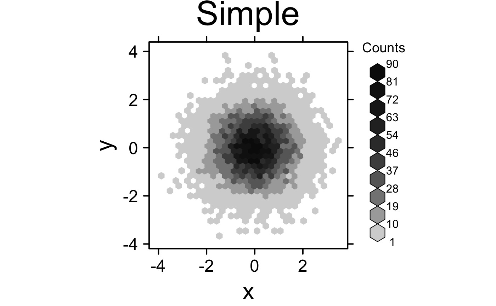
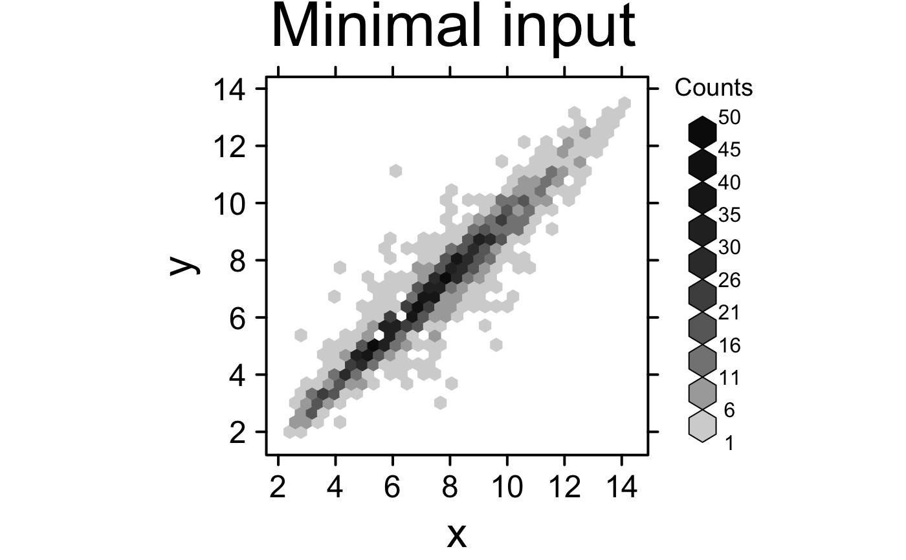
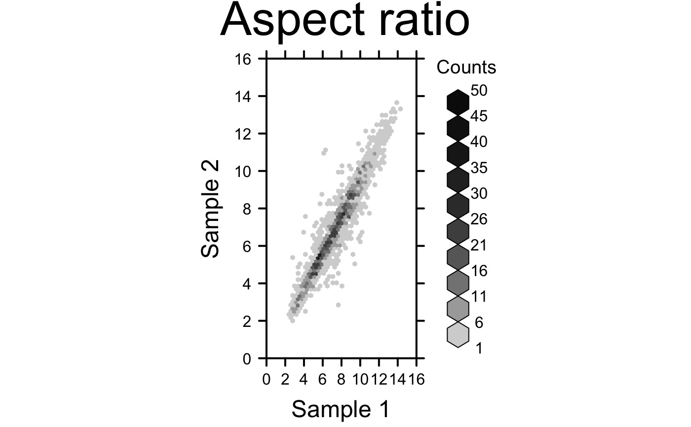
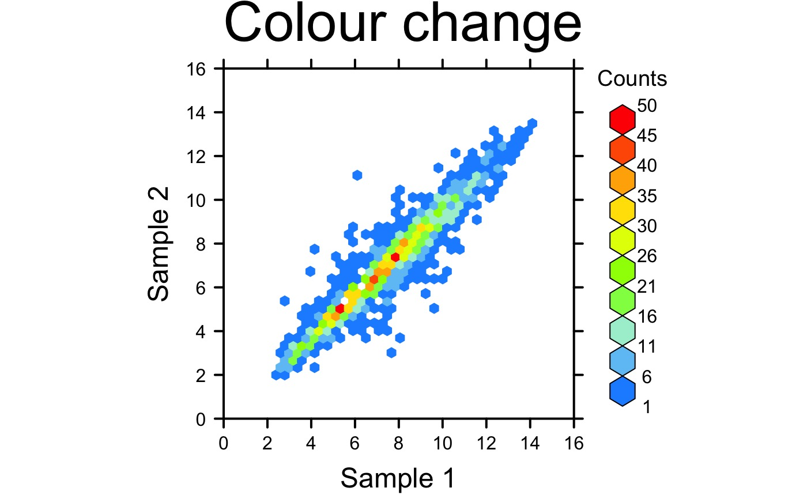
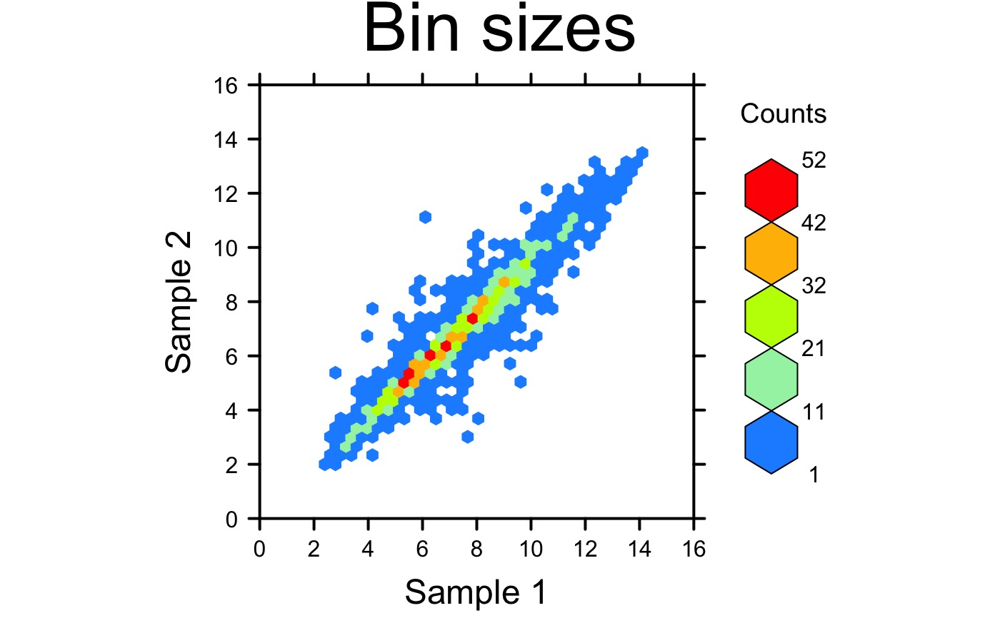
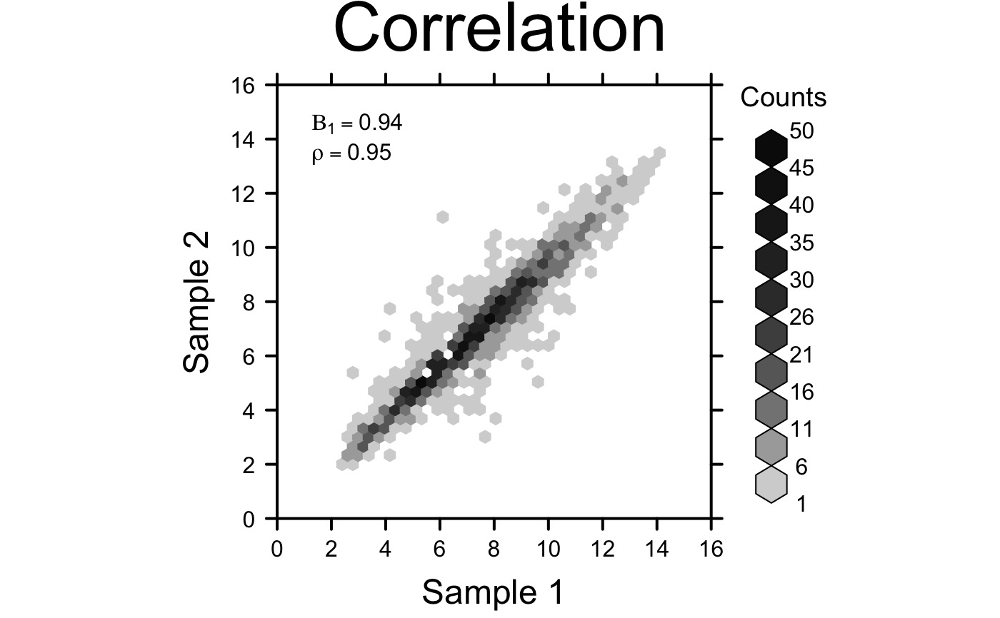
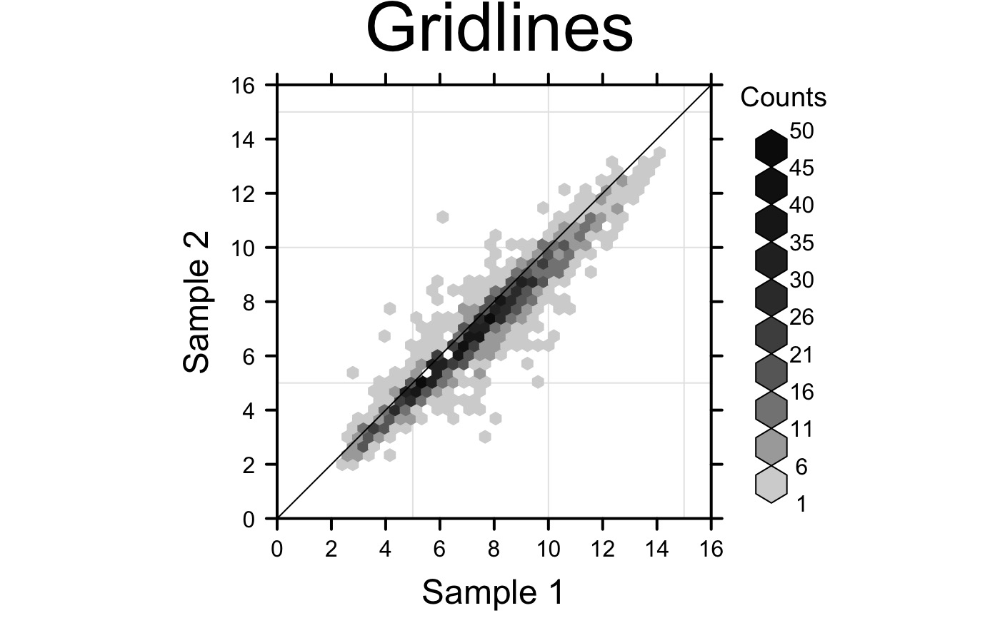
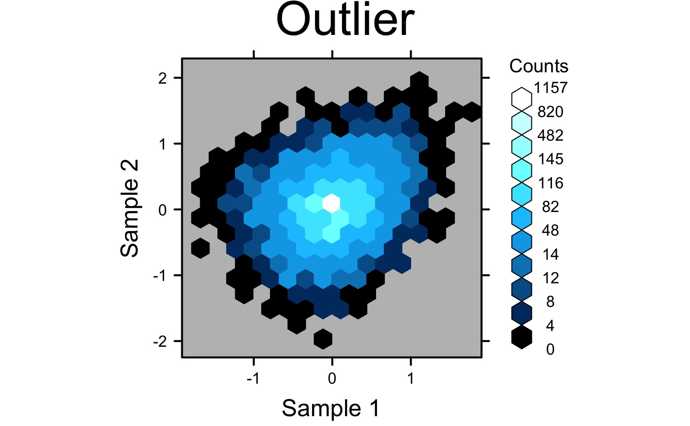
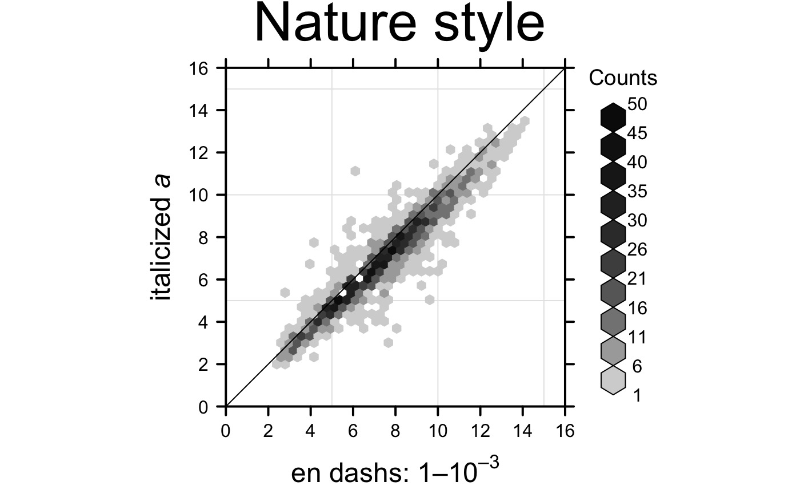
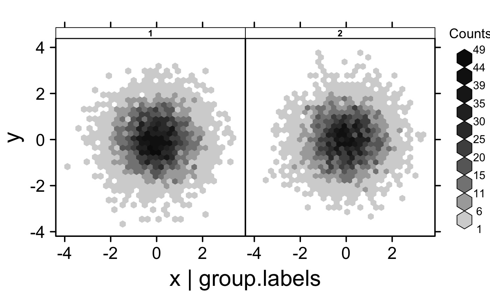

Make a hexagonally binned plot
create.hexbinplot.RdTakes a data.frame and writes a hexagonally binned plot
Usage
create.hexbinplot(
formula,
data,
filename = NULL,
main = NULL,
main.just = 'center',
main.x = 0.5,
main.y = 0.5,
main.cex = 3,
aspect = 'xy',
trans = NULL,
inv = NULL,
colour.scheme = NULL,
colourkey = TRUE,
colourcut = seq(0, 1, length = 11),
mincnt = 1,
maxcnt = NULL,
xbins = 30,
legend.title = NULL,
xlab.label = tail(sub('~', '', formula[-2]), 1),
ylab.label = tail(sub('~', '', formula[-3]), 1),
xlab.cex = 2,
ylab.cex = 2,
xlab.col = 'black',
ylab.col = 'black',
xlab.top.label = NULL,
xlab.top.cex = 2,
xlab.top.col = 'black',
xlab.top.just = 'center',
xlab.top.x = 0.5,
xlab.top.y = 0,
xlimits = NULL,
ylimits = NULL,
xat = TRUE,
yat = TRUE,
xaxis.lab = NA,
yaxis.lab = NA,
xaxis.cex = 1.5,
yaxis.cex = 1.5,
xaxis.rot = 0,
yaxis.rot = 0,
xaxis.col = 'black',
yaxis.col = 'black',
xaxis.tck = 1,
yaxis.tck = 1,
xaxis.fontface = 'bold',
yaxis.fontface = 'bold',
layout = NULL,
as.table = FALSE,
x.relation = 'same',
y.relation = 'same',
x.spacing = 0,
y.spacing = 0,
strip.col = 'white',
strip.cex = 1,
strip.fontface = 'bold',
add.grid = FALSE,
abline.h = NULL,
abline.v = NULL,
abline.lty = NULL,
abline.lwd = NULL,
abline.col = 'black',
abline.front = FALSE,
add.xyline = FALSE,
xyline.col = 'black',
xyline.lwd = 1,
xyline.lty = 1,
add.curves = FALSE,
curves.exprs = NULL,
curves.from = min(data, na.rm = TRUE),
curves.to = max(data, na.rm = TRUE),
curves.col = 'black',
curves.lwd = 2,
curves.lty = 1,
add.text = FALSE,
text.labels = NULL,
text.x = NULL,
text.y = NULL,
text.col = 'black',
text.cex = 1,
text.fontface = 'bold',
add.axes = FALSE,
top.padding = 0.1,
bottom.padding = 0.7,
left.padding = 0.5,
right.padding = 0.1,
add.rectangle = FALSE,
xleft.rectangle = NULL,
ybottom.rectangle = NULL,
xright.rectangle = NULL,
ytop.rectangle = NULL,
col.rectangle = 'transparent',
alpha.rectangle = 1,
background.col = 'transparent',
key = NULL,
legend = NULL,
height = 6,
width = 6,
size.units = 'in',
resolution = 1600,
enable.warnings = FALSE,
description = 'Created with BoutrosLab.plotting.general',
style = 'BoutrosLab',
preload.default = 'custom',
use.legacy.settings = FALSE,
inside.legend.auto = FALSE
);Arguments
- formula
The formula used to extract the x & y components from the data-frame
- data
The data-frame to plot
- filename
Filename for tiff output, or if NULL (default value) returns the trellis object itself
- main
The main title for the plot (space is reclaimed if NULL)
- main.just
The justification of the main title for the plot, default is centered
- main.x
The x location of the main title, deault is 0.5
- main.y
The y location of the main title, default is 0.5
- main.cex
Size of the main plot title
- aspect
This argument controls the physical aspect ratio of the panels, defaults to “xy”
- trans
function specifying a transformation for the counts such as log, defaults to NULL
- inv
the inverse transformation of trans, defaults to NULL
- colour.scheme
colour scheme to be used, default NULL gives LinGray colour scale
- colourkey
logical whether a legend should be drawn, defaults to TRUE
- colourcut
Vector of values covering [0, 1] that determine hexagon colour class boundaries and hexagon legend size boundaries. Alternatively, an integer (<= maxcnt) specifying the number of equispaced colourcut values in [0,1].
- mincnt
Cells with fewer counts are ignored
- maxcnt
Cells with more counts are ignored, defaults to auto-generation
- xbins
Number of bins to use in x, defaults to 30
- legend.title
character/expression to use in place of default legend title or a named list with elements: lab, x, y; defaults to NULL
- xlab.label
X-axis label
- ylab.label
Y-axis label
- xlab.cex
Size of x-axis label
- ylab.cex
Size of y-axis label
- xlab.col
Colour of the x-axis label, defaults to “black”
- ylab.col
Colour of the y-axis label, defaults to “black”
- xlab.top.label
The label for the top x-axis
- xlab.top.cex
Size of top x-axis label
- xlab.top.col
Colour of the top x-axis label
- xlab.top.just
Justification of the top x-axis label, defaults to centered
- xlab.top.x
The x location of the top x-axis label
- xlab.top.y
The y location of the top y-axis label
- xlimits
Two-element vector giving the x-axis limits
- ylimits
Two-element vector giving the y-axis limits
- xat
Vector listing where the x-axis labels should be drawn
- yat
Vector listing where the y-axis labels should be drawn
- xaxis.lab
Vector listing x-axis tick labels, defaults to automatic
- yaxis.lab
Vector listing y-axis tick labels, defaults to automatic
- xaxis.cex
Size of x-axis scales, defaults to 2
- yaxis.cex
Size of y-axis scales, defaults to 2
- xaxis.rot
Rotation of x-axis tick labels; defaults to 0
- yaxis.rot
Rotation of y-axis tick labels; defaults to 0
- xaxis.col
Colour of the x-axis tick labels, defaults to “black”
- yaxis.col
Colour of the y-axis tick labels, defaults to “black”
- xaxis.tck
Specifies the length of the tick marks for x-axis, defaults to 1
- yaxis.tck
Specifies the length of the tick marks for y-axis, defaults to 1
- xaxis.fontface
Fontface for the x-axis scales
- yaxis.fontface
Fontface for the y-axis scales
- layout
A vector specifying the number of columns, rows (e.g., c(2,1). Default is NULL.
- as.table
Specifies panel drawing order, default is FALSE which draws panels from bottom left corner, moving right then up. Set to TRUE to draw from top left corner, moving right then down
- x.relation
Allows x-axis scales to vary if set to “free”, defaults to “same”
- y.relation
Allows y-axis scales to vary if set to “free”, defaults to “same”
- x.spacing
A number specifying the distance between panels along the x-axis, defaults to 0
- y.spacing
A number specifying the distance between panels along the y-axis, defaults to 0
- strip.col
Strip background colour, defaults to “white”
- strip.cex
Strip title character expansion
- strip.fontface
Strip title fontface, defaults to bold
- add.grid
Allows grid lines to be turned on or off
- abline.h
Specify the superimposed horizontal line(s)
- abline.v
Specify the superimposed vertical line(s)
- abline.lty
Specify the superimposed line type
- abline.lwd
Specify the superimposed line width
- abline.col
Specify the superimposed line colour (defaults to black)
- abline.front
If an abline and/or a grid has been added, this controls whether they are drawn in front of the hexbins
- add.xyline
Allow y=x line to be drawn, default is FALSE
- xyline.col
y=x line colour, defaults to black
- xyline.lwd
Specifies y=x line width, defaults to 1
- xyline.lty
Specifies y=x line style, defaults to 1 (solid)
- add.curves
Allow curves to drawn, default is FALSE
- curves.exprs
A list of functions, expressions, or calls using “x” as a variable that specify the curves to be drawn
- curves.from
Specifies the x co-ordinates at which the start of each curve should be drawn, defaults to drawing the curves to the left edge of the plotting region
- curves.to
Specifies the x co-ordinates at which the end of each curve should be drawn, defaults to drawing the curves to the right edge of the plotting region
- curves.col
Specifies colours of curves, default is black for each curve
- curves.lwd
Specifies width of curves, default is 1 for each curve
- curves.lty
Specifies type of curves, default is 1 (solid) for each curve
- add.text
Allow additional text to be drawn, default is FALSE
- text.labels
Labels for additional text
- text.x
The x co-ordinates where additional text should be placed
- text.y
The y co-ordinates where additional text should be placed
- text.col
The colour of additional text
- text.cex
The size of additional text
- text.fontface
The fontface for additional text
- add.axes
Allow axis lines to be turned on or off
- top.padding
A number giving the top padding in multiples of the lattice default
- bottom.padding
A number giving the bottom padding in multiples of the lattice default
- left.padding
A number giving the left padding in multiples of the lattice default
- right.padding
A number giving the right padding in multiples of the lattice default
- add.rectangle
Allow a rectangle to be drawn, default is FALSE
- xleft.rectangle
Specifies the left x coordinate of the rectangle to be drawn
- ybottom.rectangle
Specifies the bottom y coordinate of the rectangle to be drawn
- xright.rectangle
Specifies the right x coordinate of the rectangle to be drawn
- ytop.rectangle
Specifies the top y coordinate of the rectangle to be drawn
- col.rectangle
Specifies the colour to fill the rectangle's area
- alpha.rectangle
Specifies the colour bias of the rectangle to be drawn
- background.col
Specifies the colour for the background of the plot
- key
Add a key to the plot. See xyplot.
- legend
Add a legend to the plot. Helpful for adding multiple keys and adding keys to the margins of the plot. See xyplot.
- height
Figure height, defaults to 6 inches
- width
Figure width, defaults to 6 inches
- size.units
Figure units, defaults to inches
- resolution
Figure resolution in dpi, defaults to 1600
- enable.warnings
Print warnings if set to TRUE, defaults to FALSE
- description
Short description of image/plot; default NULL.
- style
defaults to “BoutrosLab”, also accepts “Nature”, which changes parameters according to Nature formatting requirements
- preload.default
ability to set multiple sets of diffrent defaults depending on publication needs
- use.legacy.settings
boolean to set wheter or not to use legacy mode settings (font)
- inside.legend.auto
boolean specifying whether or not to use the automatic inside legend function
Value
If filename is NULL then returns the trellis object, otherwise creates a plot and returns a 0/1 success code.
Details
WARNING: this function uses highly unusual semantics, different from the rest of the BoutrosLab.plotting.general library. The underlying hexbinplot function uses an argument called maxcnt to specify the maximum number of counts per cell. The default behaviour is not sensibly encoded via a NULL or an NA, but instead by using the missing function. As a result, we need to use do.call semantics to handle this function. This can mess up anything using substitute including things that generate p-values!
Warning
If this function is called without capturing the return value, or specifying a filename, it may crash while trying to draw the histogram. In particular, if a script that uses such a call of create histogram is called by reading the script in from the command line, it will fail badly, with an error message about unavailable fonts:
Error in grid.Call.graphics("L_text", as.graphicsAnnot(x$label), x$x, )
Invalid font type
Calls: print ... drawDetails.text -> grid.Call.graphics -> .Call.graphics
If 'maxcnt' is passed, make sure it is not smaller than the actual maximum count (value depends on nbins). Otherwise, some data may be lost. If you aren't sure what the actual max count is, run this function without specifying the 'maxcnt' parameter using the desired number of bins.
Examples
set.seed(12345);
simple.data <- data.frame(
x = rnorm(10000),
y = rnorm(10000)
);
create.hexbinplot(
# filename = tempfile(pattern = 'Hexbinplot_Simple', fileext = '.tiff'),
formula = y ~ x,
data = simple.data,
main = 'Simple',
description = 'Hexbinplot created by BoutrosLab.plotting.general',
resolution = 50
);

create.hexbinplot(
# filename = tempfile(pattern = 'Hexbinplot_Simple_underlined_legend_title', fileext = '.tiff'),
formula = y ~ x,
data = simple.data,
legend.title = list(lab = expression(bold(underline('Counts'))), x = 1, y = 1.1),
right.padding = 4,
description = 'Hexbinplot created by BoutrosLab.plotting.general',
resolution = 50
);
#> Error in grid.Call(C_textBounds, as.graphicsAnnot(x$label), x$x, x$y, resolveHJust(x$just, x$hjust), resolveVJust(x$just, x$vjust), x$rot, 0): polygon edge not found
# Set up data
hexbin.data <- data.frame(
x = microarray[,1],
y = microarray[,2]
);
# Minimal Input
create.hexbinplot(
# filename = tempfile(pattern = 'Hexbinplot_Minimal_Input', fileext = '.tiff'),
formula = y ~ x,
data = hexbin.data,
main = 'Minimal input',
# formatting bins
colourcut = seq(0, 1, length = 11),
# this sets the maximum value plotted -- values greater than this will not appear
maxcnt = 50,
description = 'Hexbinplot created by BoutrosLab.plotting.general',
resolution = 100
);

# Axes & Labels
create.hexbinplot(
# filename = tempfile(pattern = 'Hexbinplot_Axes_Labels', fileext = '.tiff'),
formula = y ~ x,
data = hexbin.data,
main = 'Axes & labels',
colourcut = seq(0, 1, length = 11),
maxcnt = 50,
# Customize Axes and labels
xaxis.cex = 1,
yaxis.cex = 1,
xaxis.fontface = 1,
yaxis.fontface = 1,
xlab.cex = 1.5,
ylab.cex = 1.5,
xlab.label = 'Sample 1',
ylab.label = 'Sample 2',
xlimits = c(0,16),
ylimits = c(0,16),
xat = seq(0,16,2),
yat = seq(0,16,2),
description = 'Hexbinplot created by BoutrosLab.plotting.general',
resolution = 100
);
# \donttest{
# Aspect Ratio
create.hexbinplot(
# filename = tempfile(pattern = 'Hexbinplot_Aspect_Ratio', fileext = '.tiff'),
formula = y ~ x,
data = hexbin.data,
main = 'Aspect ratio',
xaxis.cex = 1,
yaxis.cex = 1,
xaxis.fontface = 1,
yaxis.fontface = 1,
xlab.cex = 1.5,
ylab.cex = 1.5,
xlab.label = 'Sample 1',
ylab.label = 'Sample 2',
xlimits = c(0,16),
ylimits = c(0,16),
xat = seq(0,16,2),
yat = seq(0,16,2),
colourcut = seq(0, 1, length = 11),
maxcnt = 50,
# Set the aspect ratio to control plot dimensions
aspect = 2,
description = 'Hexbinplot created by BoutrosLab.plotting.general',
resolution = 200
);

# Colour scheme
create.hexbinplot(
# filename = tempfile(pattern = 'Hexbinplot_Colour_Change', fileext = '.tiff'),
formula = y ~ x,
data = hexbin.data,
main = 'Colour change',
xaxis.cex = 1,
yaxis.cex = 1,
xaxis.fontface = 1,
yaxis.fontface = 1,
xlab.cex = 1.5,
ylab.cex = 1.5,
xlab.label = 'Sample 1',
ylab.label = 'Sample 2',
xlimits = c(0,16),
ylimits = c(0,16),
xat = seq(0,16,2),
yat = seq(0,16,2),
aspect = 1,
colourcut = seq(0, 1, length = 11),
maxcnt = 50,
# Specify colour scheme
colour.scheme = colorRampPalette(c('dodgerblue','paleturquoise','chartreuse','yellow',
'orange','red')),
description = 'Hexbinplot created by BoutrosLab.plotting.general',
resolution = 200
);

# Bin sizes
create.hexbinplot(
# filename = tempfile(pattern = 'Hexbinplot_Bin_Sizes', fileext = '.tiff'),
formula = y ~ x,
data = hexbin.data,
main = 'Bin sizes',
xaxis.cex = 1,
yaxis.cex = 1,
xaxis.fontface = 1,
yaxis.fontface = 1,
xlab.cex = 1.5,
ylab.cex = 1.5,
xlab.label = 'Sample 1',
ylab.label = 'Sample 2',
xlimits = c(0,16),
ylimits = c(0,16),
xat = seq(0,16,2),
yat = seq(0,16,2),
aspect = 1,
colour.scheme = colorRampPalette(c('dodgerblue','paleturquoise','chartreuse', 'yellow',
'orange','red')),
# Specify bin sizes
colourcut = seq(0,1,length = 6),
description = 'Hexbinplot created by BoutrosLab.plotting.general',
resolution = 200
);

# Correlation Key
create.hexbinplot(
# filename = tempfile(pattern = 'Hexbinplot_Correlation', fileext = '.tiff'),
formula = y ~ x,
data = hexbin.data,
main = 'Correlation',
xaxis.cex = 1,
yaxis.cex = 1,
xaxis.fontface = 1,
yaxis.fontface = 1,
xlab.cex = 1.5,
ylab.cex = 1.5,
xlab.label = 'Sample 1',
ylab.label = 'Sample 2',
xlimits = c(0,16),
ylimits = c(0,16),
xat = seq(0,16,2),
yat = seq(0,16,2),
aspect = 1,
colourcut = seq(0, 1, length = 11),
maxcnt = 50,
# Correlation Key
legend = list(
inside = list(
fun = draw.key,
args = list(
key = get.corr.key(
x = hexbin.data$x,
y = hexbin.data$y,
label.items = c('beta1', 'spearman'),
alpha.background = 0
)
),
x = 0.05,
y = 0.95,
corner = c(0,1),
draw = FALSE
)
),
description = 'Hexbinplot created by BoutrosLab.plotting.general',
resolution = 200
);

# Grid lines and diagonal
create.hexbinplot(
# filename = tempfile(pattern = 'Hexbinplot_Gridlines', fileext = '.tiff'),
formula = y ~ x,
data = hexbin.data,
main = 'Gridlines',
xaxis.cex = 1,
yaxis.cex = 1,
xaxis.fontface = 1,
yaxis.fontface = 1,
xlab.cex = 1.5,
ylab.cex = 1.5,
xlab.label = 'Sample 1',
ylab.label = 'Sample 2',
xlimits = c(0,16),
ylimits = c(0,16),
xat = seq(0,16,2),
yat = seq(0,16,2),
aspect = 1,
colourcut = seq(0, 1, length = 11),
maxcnt = 50,
# Grid & diagonal
add.grid = TRUE,
add.xyline = TRUE,
description = 'Hexbinplot created by BoutrosLab.plotting.general',
resolution = 200
);

# Large range
# Generate some fake data with both very low and very high values
set.seed(12345);
x <- c(rnorm(100000,0,0.1),rnorm(1000,0,0.5),rnorm(1000,0,sd=0.75));
y <- c(rnorm(100000,0,0.1),rnorm(1000,0,0.5),rnorm(1000,0,sd=0.75));
fake.data <- data.frame(
x = x,
y = y,
z = y + x*(x+1)/4
);
create.hexbinplot(
# filename = tempfile(pattern = 'Hexbinplot_Range', fileext = '.tiff'),
formula = z ~ x,
data = fake.data,
main = 'Range',
xaxis.cex = 1,
yaxis.cex = 1,
xaxis.fontface = 1,
yaxis.fontface = 1,
xlab.cex = 1.5,
ylab.cex = 1.5,
xlab.label = 'Sample 1',
ylab.label = 'Sample 2',
aspect = 1,
# Use colourcut to divide the bins appropriately
colourcut = c(0,0.0002,0.0004,0.0008,0.0016,0.0032,0.0064,0.0128,0.0256,0.0512,0.1024,0.2048,
0.4096,0.8192,1),
# Change the colour scheme
colour.scheme = function(n){BTC(n, beg=1, end=256)},
background.col = 'grey',
description = 'Hexbinplot created by BoutrosLab.plotting.general',
resolution = 200
);
# Outliers
# Generate data with upper bound outlier
set.seed(12345);
x <- c(rnorm(1000,0,0),rnorm(4000,0,0.5));
y <- c(rnorm(1000,0,0),rnorm(4000,0,0.5));
fake.data.outlier <- data.frame(
x = x,
y = y,
z = y + x*(x+1)/4
);
create.hexbinplot(
# filename = tempfile(pattern = 'Hexbinplot_Outlier', fileext = '.tiff'),
formula = z ~ x,
data = fake.data.outlier,
main = 'Outlier',
xaxis.cex = 1,
yaxis.cex = 1,
xaxis.fontface = 1,
yaxis.fontface = 1,
xlab.cex = 1.5,
ylab.cex = 1.5,
xlab.label = 'Sample 1',
ylab.label = 'Sample 2',
aspect = 1,
# Use colourcut to divide the bins appropriately
colourcut = c(seq(0,0.01, length = 4),seq(0.0125,0.1,length=4), seq(0.125,1,length=4)),
xbins = 15,
mincnt = 0,
# Change the colour scheme
colour.scheme = function(n){BTC(n, beg=1, end=256)},
background.col = 'grey',
description = 'Hexbinplot created by BoutrosLab.plotting.general',
resolution = 200
);

# Nature style
create.hexbinplot(
# filename = tempfile(pattern = 'Hexbinplot_Nature_style', fileext = '.tiff'),
formula = y ~ x,
data = hexbin.data,
main = 'Nature style',
xaxis.cex = 1,
yaxis.cex = 1,
xaxis.fontface = 1,
yaxis.fontface = 1,
xlab.cex = 1.5,
ylab.cex = 1.5,
xlimits = c(0,16),
ylimits = c(0,16),
xat = seq(0,16,2),
yat = seq(0,16,2),
aspect = 1,
colourcut = seq(0, 1, length = 11),
maxcnt = 50,
# Grid & diagonal
add.grid = TRUE,
add.xyline = TRUE,
# set style to Nature
style = 'Nature',
# demonstrating how to italicize character variables
ylab.lab = expression(paste('italicized ', italic('a'))),
# demonstrating how to create en-dashes
xlab.lab = expression(paste('en dashs: 1','\u2013', '10'^'\u2013', ''^3)),
description = 'Hexbinplot created by BoutrosLab.plotting.general',
resolution = 200
);
#> Warning: Setting resolution to 1200 dpi.
#> Warning: Nature also requires italicized single-letter variables and en-dashes
#> for ranges and negatives. See example in documentation for how to do this.
#> Warning: Avoid red-green colour schemes, create TIFF files, do not outline the figure or legend

# Multiplot different groups
set.seed(73);
# Randomly generate groups
simple.data$groups <- sample(1:2, 10000, replace = TRUE);
simple.data$group.labels <- as.factor(simple.data$groups);
create.hexbinplot(
formula = y ~ x | groups,
# filename = tempfile(
# pattern = 'stratified_hexbinplot_numeric_conditioning',
# fileext = '.tiff'
# ),
data = simple.data,
description = 'Hexbinplot created by BoutrosLab.plotting.general',
strip.col = 'white',
strip.cex = 0.8,
strip.fontface = 'bold',
resolution = 200
);
#> Warning: Numeric values detected for conditional variable. If text labels are desired, please convert conditional variable to character.
create.hexbinplot(
formula = y ~ x | group.labels,
# filename = tempfile(
# pattern = 'stratified_hexbinplot_factor_conditioning',
# fileext = '.tiff'
# ),
data = simple.data,
description = 'Hexbinplot created by BoutrosLab.plotting.general',
strip.col = 'white',
strip.cex = 0.8,
strip.fontface = 'bold',
resolution = 200
);

# }